This demo should take about 5 minutes.
In this demo we will begin to secure our backend services. In the last demo, we had the keys to the storage service in the code running on the mobile clients. We’ll now move this to be only on the backend and grant temporary write access to the client application to upload images.
Hyper-V enabled PC. Required for the Visual Studio UWP and Visual Studio Android emulators.
Internet connection is required in order to setup and run the demos.
You will need Visual Studio 2015/ or Community edition with Update 3
To download Visual Studio 2015 Community edition, https://www.visualstudio.com/vs/mobile-app-development/
Visual Studio Android emulator: https://www.visualstudio.com/vs/msft-android-emulator/
If you encounter issues with connecting Visual Studio debugger with the Visual Studio I would recommend following the steps from this blog article: http://dotnetbyexample.blogspot.ca/2016/02/fix-for-could-not-connect-to-debugger.html
(Optional) Mac for compiling and run the iOS projects. Mac is also required to use the XCode designers within Visual Studio for PC or Mac.
It is required to setup the backend prior to delivering this demo.
Login into the Azure Portal
Open the mobile service that was created from demo 2.1. (1). Search with “Easy” to locate. Then click Easy tables option (2).
Click on the photo table to open it (1).
Click the Edit script option to open the Node.js backend (1).
Click on the Open Console option (1).
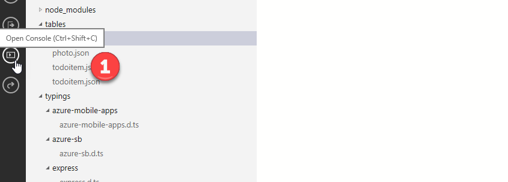
Enter “npm install azure-storage” into the console and press enter to execute the command (1). This will add the Node.js modules for the AzureStorage service to the Easy Table backend.
Bring up the pop menu and select New Folder option (1). Enter the api for the folder name. This is the default folder the Node.js service looks for customized endpoints to the service.
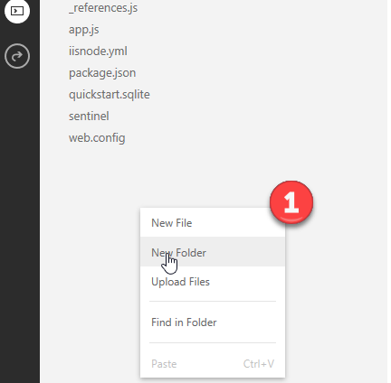
Select the api folder. Bring up pop menu and select the New File option. Use
Use the name azurestoragesasgen.js for the new file (1).
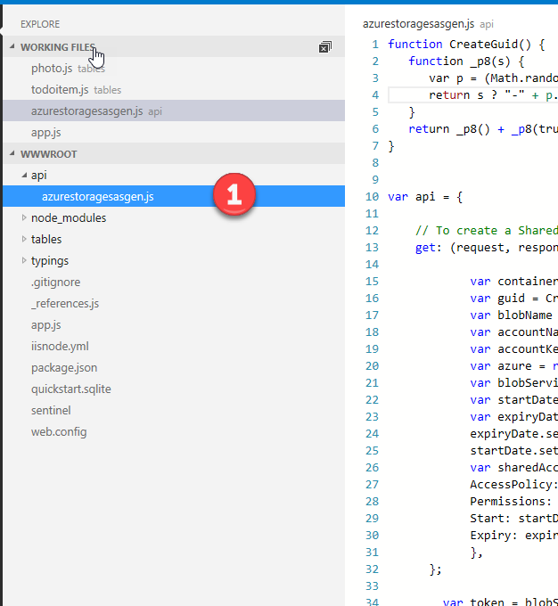
Paste the following code into the new javascript file. The online editor will auto save for you.
function CreateGuid() {
function _p8(s) {
var p = (Math.random().toString(16)+"000000000").substr(2,8);
return s ? "-" + p.substr(0,4) + "-" + p.substr(4,4) : p ;
}
return _p8() + _p8(true) + _p8(true) + _p8();
}
var api = {
// To create a Shared Access Signature (SAS), use the generateSharedAccessSignature method
get: (request, response, next) => {
var containerName = 'photos';
var guid = CreateGuid();
var blobName = guid + '.png';
var accountName = 'gpstagimagestorage';
var accountKey = 'y8zzh5OH5l3mAQoP/MVL/3ZSsJT/YomNvO/4zur2LSACCEtyMLCbAw3WEH65ctqjrkk23/jgPh0/5fGSPizbbA==';
var azure = require('azure-storage');
var blobService = azure.createBlobService(accountName,accountKey);
var startDate = new Date();
var expiryDate = new Date(startDate);
expiryDate.setMinutes(startDate.getMinutes() + 100);
startDate.setMinutes(startDate.getMinutes() - 100);
var sharedAccessPolicy = {
AccessPolicy: {
Permissions: 'rwc',
Start: startDate,
Expiry: expiryDate
},
};
var token = blobService.generateSharedAccessSignature(containerName, blobName, sharedAccessPolicy);
var sasUrl = blobService.getUrl(containerName, blobName, token);
response.send(JSON.stringify(sasUrl));
}
};
module.exports = api;
Go to the Solutions folder with this content, locate the Demo2.4.zip file, extract it to a new folder under your Documents folder.
Open up the solution file under the Start folder.
Go to the Azure portal. Show the api folder and JavaScript file you added. Explain that this gets an Azure storage access key to give write permission for a new blob file.
Go back to Visual Studio. Now we need to update the Azure Storage service to use Shared Access Signatures. Select the GPSImageTag.Shared.API project (1). In the pop menu select the Add option (2). Now, select the Existing Item option (3).
Select the file AzureStorageService.cs from the folder the Documents > Demo2.4 > SRC > Start > Code Files> Services (1). Next, click the Add button.
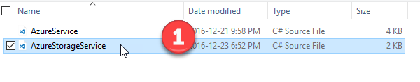
Click on the Yes button to overwrite the existing file.
Delete the file Configuration.cs.
Open the AzureStorageServices.cs file in the GPSImageTag.Shared.API. Show the audience that we are no longer reading the Azure Storage connection information from the Configuration.cs file.
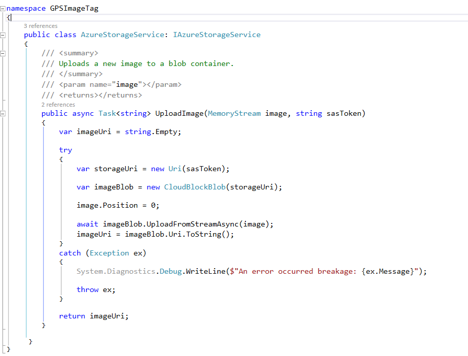
Next, we need to update the interfaces files within the GPSImageTag.Core. Select the Interfaces folder in the GPSImageTag.Core project (1). In the pop menu select the Add option (2). Now, select the Existing Item option (3).
Select the files IAzureService.cs and IAzureStorageService from the folder the Documents > Demo2.4 > SRC > Start > Code Files> Interfaces (1). Next, click the Add button.
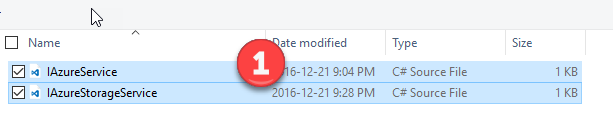
Enable the Apply to all items (1). Then Click the Yes button to confirm replacing the existing files (2).
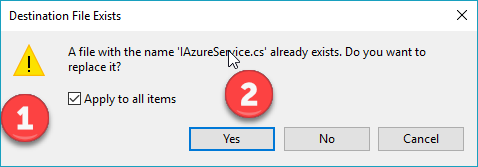
Next, we need to update the Azure service class file within the GPSImageTag.Core. Select the Services folder in the GPSImageTag.Core project (1). In the pop menu select the Add option (2). Now, select the Existing Item option (3).
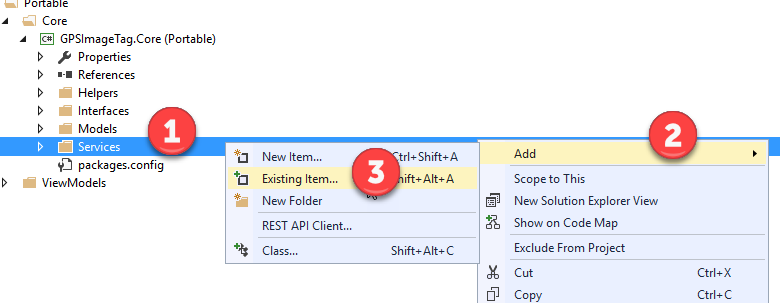
Select the file AzureService.cs from the folder the Documents > Demo2.4 > SRC > Start > Code Files> Interfaces (1). Next, click the Add button.
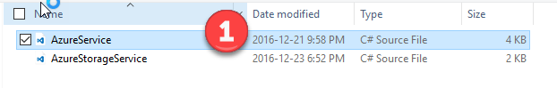
Click the Yes button to confirm replacing the existing file (1).
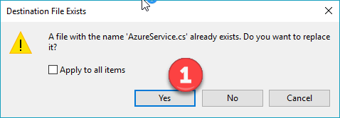
Press F6 to build the solution.
Press F5 to run the UWP client.
Take a photo. Enter the name and description for the photo (1). Press the Upload Photo button.
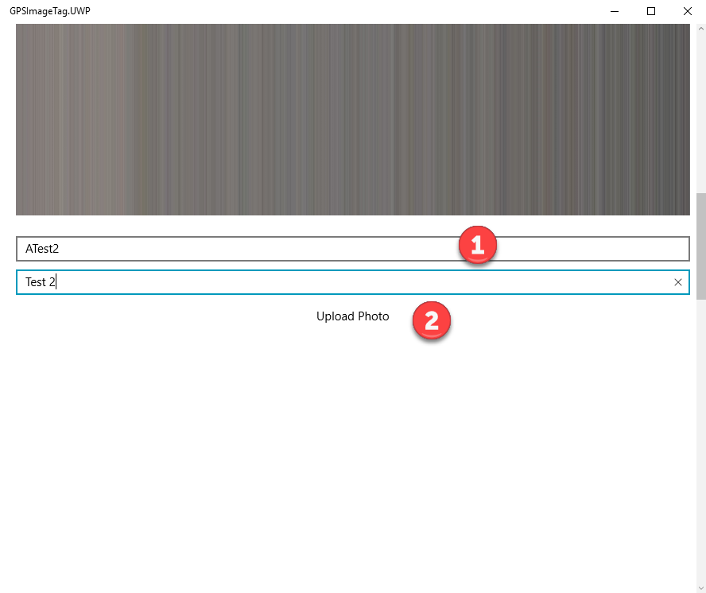
Log into the Azure portal and navigate to the mobile service easy table created for this demo and show the photo has been uploaded (1).
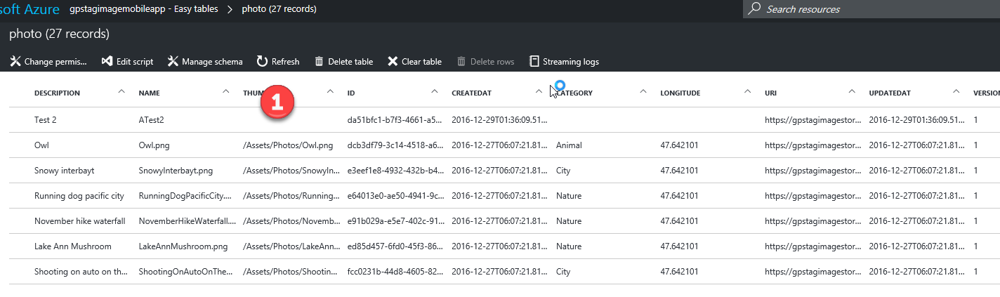
Summarize what was accomplished in the demo.